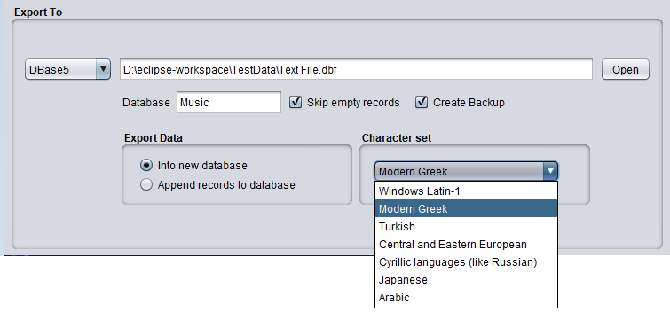

Export To xBase databases

Export Data
- Into new database
This option creates a new database. Should a previous copy of the "Export To" database file already exist then
DBConvert/FNprog2PDA will overwrite it.
- Append records to database
Similar as the previous option, but in this case the new records are appended to the existing records in the
database.
Character set
Specifies the character set to be used for the xBase export. Default is MS-Windows Latin-1 which stands for
character set "windows-1252" (also mistakingly called ANSI).